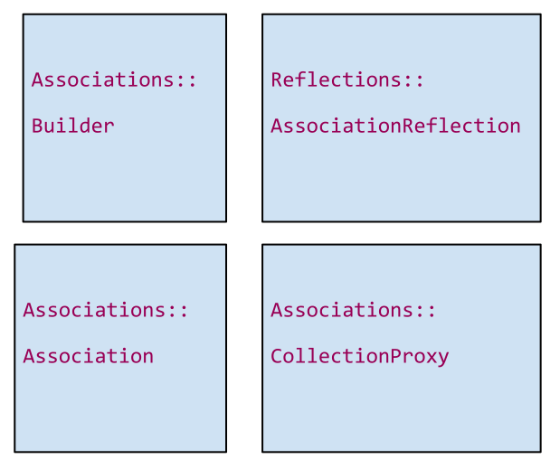
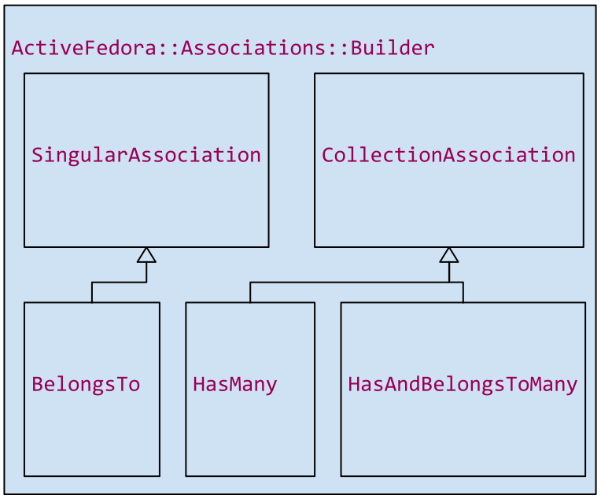

class Book < ActiveFedora::Base
belongs_to :library
has_many :pages
has_and_belongs_to_many :authors
end
These directives enable a developer to declare relationships. But what do they do? Many people say this is where "Rails is magic", but I want to take you behind the scenes and show you how the illusion is perpetrated. First thing to notice is that belongs_to is a singular assocation and has_many and has_many_and_belongs to is a collection association

Four important base classes
A Reflection is an entry in a registry that says, you've declared an association named library, and it's a belongs to association and you're using the predicate isPartOf
Builder is responsible for creating that entry and for generating the related accessor methods on your class
Association is the object that does the storing and resolving for an instance.
Proxy is used on CollectionAssociations, basically the result of the association, appears to be an array.

we call each of these association types "the macro"
All extend from:
ActiveFedora::Associations::Builder::Association
It's priamary method is "build"
# lib/active_fedora/associations.rb
def belongs_to(name, options = {})
raise "You must specify a property name for #{name}" if !options[:property]
Builder::BelongsTo.build(self, name, options)
end
These methods are defined in the Associations module
https://github.com/projecthydra/active_fedora/blob/master/lib/active_fedora/associations.rb
They say "Builder of the correct type" Build me an association
Builder creates a Reflection
Book.create_reflection(:has_and_belongs_to_many, 'pages', { property: 'hasPages'}, Book)
# Adds a reflection:
Book.reflections
#=> { 'pages' => <#AssociationReflection
# @options={ :property => :has_pages }
# @macro=:has_and_belongs_to_many ...> }
Builder creates the accessors
def "#{name}_id"
association(name).id_reader
end
def "#{name}_id="(id)
association(name).id_writer(id)
end
This is s simplified version of what is done for a BelongsTo association.
Creating an anonymous module, generates accessor methods and includes the module into the target class
https://github.com/projecthydra/active_fedora/blob/f2b1fd092889cfefdffcb5d63a9fc1fd87e7242a/lib/active_fedora/associations/builder/belongs_to.rb#L80-L88
Builder creates the accessors
def "#{name}"
association(name).reader
end
def "#{name}="(value)
association(name).writer(value)
end
This is s simplified version of what is done for a BelongsTo association.
Creating an anonymous module, generates accessor methods and includes the module into the target class
https://github.com/projecthydra/active_fedora/blob/f2b1fd092889cfefdffcb5d63a9fc1fd87e7242a/lib/active_fedora/associations/builder/belongs_to.rb#L80-L88
The association method
def association(name)
reflect = self.class.reflect_on_association(name)
reflect.association_class.new(self, reflect)
end
The SingularAssociation
id_reader
id_writer
reader
writer
The CollectionAssociation
ids_reader
ids_writer
reader (returns a proxy)
writer
Two subclasses:
HasManyAssociation (depends on solr to resolve incoming assertion)
HasAndBelongsToManyAssociation looks at a collection of outgoing assertions
CollectionProxy
class Book < ActiveFedora::Base
belongs_to :library, property: :has_constituent
end
class Library < ActiveFedora::Base
has_many :books
end
A thin wrapper around the multiple associations that separates the concerns of operating on the association from the collection of proxied records.
CollectionProxy
library = Library.new
library.books.build
library.books.build
library.books.class
=> ActiveFedora::Associations::CollectionProxy
library.books
=> [#<Book pid: nil, library_id: nil>, #<Book pid: nil, library_id: nil>]